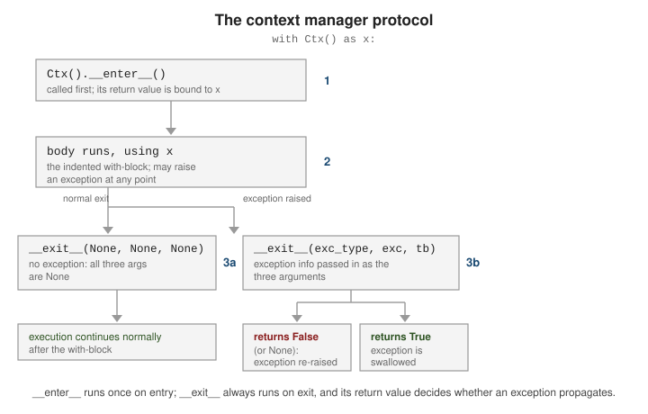

Files and Context Managers
|
This content was generated with the assistance of AI and should be verified against the official documentation before being relied on in production. |
Reading and writing files is one of the main places Python asks you to release a resource once you’re done
with it — the with statement and the context manager protocol behind it exist largely for this reason.
Opening, Reading, and Writing Files
open() returns a file object for a given path and mode: "r" (read text, the default), "w" (write,
truncating), "a" (append), and "b" combined with any of those for binary I/O ("rb", "wb"). The full
mode table and encoding rules are in the tutorial’s
Reading and Writing Files
section (see also the open() reference for every
argument).
f = open("notes.txt", "w")
f.write("first line\n")
f.write("second line\n")
f.close() # must close explicitly to flush and release the handleReading offers .read() (the whole file, or up to a given size, as one string), .readline() (one line at a
time), and plain iteration (line by line, memory-efficient for large files):
f = open("notes.txt", "r")
whole = f.read() # entire remaining contents as one string
f.close()
f = open("notes.txt", "r")
first = f.readline() # 'first line\n'
f.close()
f = open("notes.txt", "r")
for line in f: # iterate lazily, one line per iteration
print(line.rstrip("\n"))
f.close()Every one of these examples has a bug waiting to happen: if .write() or .read() raises, .close() is
never reached, and the underlying file descriptor leaks.
The with Statement
The idiomatic fix is not a manual try/finally — it’s the with statement, specified in
the language reference’s with
statement section. open() returns a context manager, so .close() is guaranteed to run when the block
exits, exception or not:
# Equivalent to the with-statement below, spelled out manually
f = open("notes.txt", "r")
try:
data = f.read()
finally:
f.close() # always runs, even if .read() raised
# Idiomatic: with guarantees the close()
with open("notes.txt", "r") as f:
data = f.read()
# f.close() has already happened here, on every exit pathA single with can open several context managers at once, each closed in reverse order when the block ends:
with open("in.txt") as src, open("out.txt", "w") as dst:
for line in src:
dst.write(line.upper())pathlib.Path: the Modern Alternative to os.path
pathlib.Path represents a filesystem path as an object instead of a plain string, so joining paths uses
the / operator and checks/reads are methods rather than free functions from os.path. Full reference:
the pathlib module documentation.
from pathlib import Path
base = Path("data")
config_path = base / "config" / "settings.txt" # join with '/', not os.path.join(...)
print(config_path.exists()) # True/False, no os.path.exists() call neededFor text files, Path.read_text() opens, reads, and closes in a single call — no with block needed for
this common case, since the file handle never outlives the method call:
from pathlib import Path
contents = Path("notes.txt").read_text() # open + read + close, in one expression
Path("notes.txt").write_text(contents.upper()) # open + write + closeSee Path.read_text() and
Path.write_text() for their
encoding and error-handling arguments. pathlib has far more to it than path joining and text
I/O — globbing, renaming, stat info, and more — covered in full in
Standard Library Tour's pathlib section rather than repeated here.
The Context Manager Protocol
with EXPR as x: is not special-cased to files — it works with any object implementing two methods,
__enter__() and __exit__(), together called the context manager protocol (same language-reference
section as above). __enter__() runs first and its return value is bound to x; the block body then runs;
__exit__() always runs when the block ends, whether it ended normally or via an exception. If an exception
occurred, __exit__() receives its type, value, and traceback as three arguments — and if __exit__()
returns a truthy value (typically True), that exception is treated as handled and does not propagate
past the with block.

with open("notes.txt") as f: # f.__enter__() returns f itself; bound to 'f'
data = f.read()
raise ValueError("oops") # f.__exit__(ValueError, ..., ...) still runs, then re-raisesWriting a custom class with its own __enter__/__exit__ — including one whose __exit__ swallows a
particular exception by returning True — is covered on Operator Overloading, which
this page defers to rather than duplicating.
File Objects, Context Managers, and Paths in Depth
What open() returns
open() returns a layered object. In text mode (the default) the stack is a TextIOWrapper (decoding and newline
translation) over a BufferedReader or BufferedWriter (an in-memory buffer) over a FileIO (the operating-system file
descriptor). In binary mode ("rb", "wb") you get the buffered layer directly and read bytes. Buffering is why data
written with write() may not be on disk until flush(), close() or the end of a with block, and why a crash can lose
the tail of a file.
The mode letters combine as r, w (truncate), a (append), x (create exclusively, fail if it exists) with b or t
and + (read and write). Text mode needs an explicit encoding= to be portable (the default is locale dependent), and
newline="" is what the csv module expects. A text file object is also an iterator over lines, so
for line in f reads lazily and handles files larger than memory.
import tempfile
from pathlib import Path
base = Path(tempfile.mkdtemp())
path = base / "shelf.txt"
# newline handling and encodings are explicit
with open(path, "w", encoding="utf-8", newline="\n") as f:
n = f.write("Dune\nEmma\nÜlysses\n")
print("chars written:", n, "bytes on disk:", path.stat().st_size)
with open(path, encoding="utf-8") as f:
print(f.readline(), end="") # one line at a time, lazily
print(list(f)) # the rest; the file object is its own iterator
print(f.tell(), f.seek(0), f.read(4))
print(path.read_bytes()[:12])
with open(path, "rb") as raw:
print(type(raw).__name__, type(raw.read(4)).__name__)
with open(path, "a", encoding="utf-8") as f:
f.write("Odes\n")
print(path.read_text(encoding="utf-8").splitlines())
# a file object must be closed; 'with' does it even when an exception occurs
try:
with open(path, encoding="utf-8") as f:
raise RuntimeError("boom")
except RuntimeError:
print("closed after error:", f.closed)
# exclusive creation refuses to overwrite
try:
open(path, "x")
except FileExistsError as exc:
print("FileExistsError:", exc.errno)Output:
chars written: 18 bytes on disk: 19
Dune
['Emma\n', 'Ülysses\n']
19 0 Dune
b'Dune\nEmma\n\xc3\x9c'
BufferedReader bytes
['Dune', 'Emma', 'Ülysses', 'Odes']
closed after error: True
FileExistsError: 17Note that 18 characters became 19 bytes because the capital U with a diaeresis takes two bytes in UTF-8, and that tell()
on a text file returns an opaque position that is only safe to pass back to seek().
How with works, and what __exit__ may do
with expr as name: evaluates expr, calls __enter__ on the result (its return value is bound to name), runs the body,
and always calls __exit__(exc_type, exc, traceback) afterwards, even on return, break or an exception. If the body
raised, __exit__ receives the exception and may suppress it by returning a true value; returning None or False
lets it propagate. Context managers are the standard way to pair "acquire" with "release" for files, locks, database
transactions, temporary state and timers.
contextlib removes the boilerplate: @contextmanager turns a generator with one yield into a context manager (code
before the yield is __enter__, code after it, in a finally, is __exit__), suppress ignores listed exceptions,
redirect_stdout temporarily swaps sys.stdout, and ExitStack manages a number of context managers only known at run
time.
import contextlib
import os
import tempfile
from contextlib import ExitStack, contextmanager, suppress
from pathlib import Path
class Transaction:
"""Class-based context manager: __exit__ decides whether to swallow the error."""
def __enter__(self):
print("begin")
return self
def __exit__(self, exc_type, exc, tb):
print("rollback" if exc_type else "commit", "| error:", exc_type.__name__ if exc_type else None)
return False # False/None: propagate the exception
with Transaction():
print("work")
try:
with Transaction():
raise ValueError("bad row")
except ValueError as exc:
print("caught", exc)
@contextmanager
def working_dir(path):
"""Generator-based: code before yield is __enter__, after is __exit__."""
previous = Path.cwd()
os.chdir(path)
try:
yield Path.cwd()
finally:
os.chdir(previous) # runs even if the body raised
tmp = Path(tempfile.mkdtemp()).resolve()
with working_dir(tmp) as here:
print(here == tmp)
print(Path.cwd() != tmp)
with suppress(FileNotFoundError): # ignore one specific, expected error
(tmp / "missing.txt").unlink()
with ExitStack() as stack: # a dynamic number of context managers
files = [stack.enter_context(open(tmp / f"part{i}.txt", "w")) for i in range(3)]
for i, f in enumerate(files):
f.write(str(i))
print(all(f.closed for f in files), sorted(p.name for p in tmp.iterdir()))
with contextlib.redirect_stdout(open(tmp / "out.txt", "w")) as sink:
print("captured")
sink.close()
print((tmp / "out.txt").read_text().strip())Output:
begin
work
commit | error: None
begin
rollback | error: ValueError
caught bad row
True
True
True ['part0.txt', 'part1.txt', 'part2.txt']
capturedpathlib patterns that avoid bugs
pathlib.Path treats a path as a value with structure (parent, name, stem, suffix, parts) instead of a string to
slice, and the / operator joins segments with the right separator for the platform. PurePath classes compute without
touching the file system, so you can build a Windows path on Linux. For files that must never be seen half written, write
to a temporary file in the same directory and os.replace it over the target, which is atomic on a single file system.
Walk trees with rglob or os.walk, and prefer Path.read_text(encoding=...) for small files.
import os
import tempfile
from pathlib import Path
root = Path(tempfile.mkdtemp())
(root / "data" / "2026").mkdir(parents=True)
(root / "data" / "2026" / "loans.csv").write_text("title,days\nDune,14\n")
(root / "data" / "notes.txt").write_text("hello\n")
p = root / "data" / "2026" / "loans.csv"
print(p.name, p.stem, p.suffix, p.parent.name, p.relative_to(root))
print(sorted(x.name for x in root.rglob("*.*")))
print(p.with_suffix(".bak").name, p.with_name("returns.csv").name)
print([part for part in p.relative_to(root).parts])
# atomic replace: write a temporary file, then rename over the target
target = root / "data" / "notes.txt"
tmp = target.with_suffix(".tmp")
tmp.write_text("new content\n")
os.replace(tmp, target)
print(target.read_text().strip(), tmp.exists())
# paths are compared as paths, not strings, and PurePath works without touching the disk
from pathlib import PurePosixPath, PureWindowsPath
print(PureWindowsPath("C:/shelf/dune.txt").parts, PurePosixPath("/a") / "b")
print(Path("data") == Path("data/"), str(Path("a//b/./c")))Output:
loans.csv loans .csv 2026 data/2026/loans.csv
['loans.csv', 'notes.txt']
loans.bak returns.csv
['data', '2026', 'loans.csv']
new content False
('C:\\', 'shelf', 'dune.txt') /a/b
True a/b/cEvery snippet in this section was run with CPython 3.14.8 and the output shown is the real output; the temporary directories they create are generated per run, so paths are not printed.
See Also
-
Exceptions — the
try/except/finallymachinery thatwithreplaces for resource cleanup, and how exceptions interact with__exit__(). -
Operator Overloading — implementing a custom context manager’s
__enter__and__exit__methods.